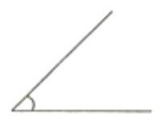
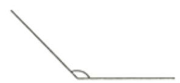
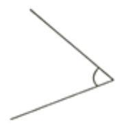
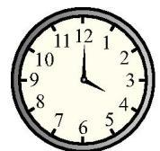
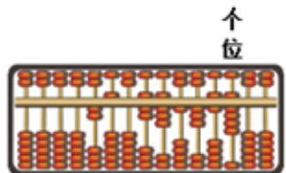

1．自己摆好量角器
量出下面三个角的度数。

角1：______°

角2：______°

角3：______°
教学与帮助见学习页面；保留首稿，可用草稿、直尺和量角器。
量出下面三个角的度数。

角1：______°

角2：______°

角3：______°
量出钟面上时针和分针组成的较小角。

较小角：______°
用量角器画一个120°的角。
自己选择开口方向。画完回量，修改时保留首稿。
教学与帮助见学习页面；保留首稿，可用草稿、直尺和量角器。
教材练习五第7题，求弧线标出的两个外侧角。
答：________________________________________________
看示范：内侧135°，外侧如何与它拼成完整一圈。
内侧与外侧合起来是360°。外侧：360°－135°＝225°；核验：135°＋225°＝360°。
这是方法示例，不用另写答案。
从6时到7时，时针旋转了多少度，分针旋转了多少度？
时针：________________ 分针：________________
答：________________________________________________
从1时到3时，时针与分针分别转过多少度？
时针计算：________________________________
分针计算：________________________________
教学与帮助见学习页面；保留首稿，可用草稿、直尺和量角器。
看示范：从4时到8时，两根针各自累计走过多少。
4→5→6→7→8，共4段一小时。
时针：30°＋30°＋30°＋30°＝120°。
分针：360°＋360°＋360°＋360°＝1440°。
核验：120°÷30°＝4，1440°÷360°＝4，都回到原来的4小时。示范中的数不用另写。
6时整，时针与分针形成多少度的较小角？再过一个小时，两针形成多少度的较小角？
6时：________________ 7时：________________
答：________________________________________________
9000000000＋40000000＋300000＝（ ）。这个数是（ ）位数，最高位是（ ）位，十万位上是（ ）。
可以自画数位表，写完按原式读回检查。
由6个十亿，2个亿，3个十万和5个1组成的数是（ ），这个数读作（ ）。
写数：________________________________
读数：________________________________
把三十亿七千五百万五千三百三十写成数字。
写数：________________________
教学与帮助见学习页面；保留首稿，可用草稿、直尺和量角器。
算盘上拨出的数是多少？写一写。

写数：________________________________
从300700090000中去掉4个0，使剩下的8个数字（前后顺序不变）组成的八位数只读一个零。这个八位数是多少？
先在原数上划去4个0，再把留下的数字按原顺序写下来。
3 0 0 7 0 0 0 9 0 0 0 0